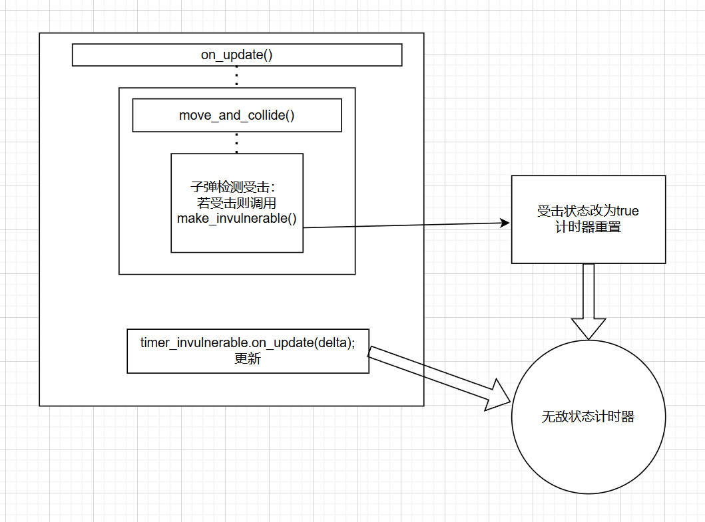

计时器
[TOC]
游戏设计中的计时器类通常用于控制、管理和记录游戏中时间相关的功能。计时器类的作用是在游戏中跟踪时间的流逝、延迟执行特定事件、限制某些活动的时间长度等。
计时器类的功能包括启动计时器、停止计时器、重置计时器、设置计时器的时间间隔、执行回调函数等。
我们先通过植物明星大乱斗的计时器实现代码来分析，然后从实例中讲解每一步的实现
#ifndef _TIMER_H_
#define _TIMER_H_
#include <functional>
class Timer
{
public:
Timer() = default;
~Timer() = default;
void restart()
{
pass_time = 0;
shotted = false;
}
void set_wait_time(int val)
{
wait_time = val;
}
void set_one_shot(bool flag)
{
one_shot = flag;
}
void set_callback(std::function<void()> callback)
{
this->callback = callback;
}
void pause()
{
paused = true;
}
void resume()
{
paused = false;
}
void on_update(int delta)
{
if (paused)
return;
pass_time += delta;
if (pass_time >= wait_time)
{
if ((!one_shot || (one_shot && !shotted)) && callback)
callback();
shotted = true;
pass_time = pass_time-wait_time;
}
}
private:
int pass_time = 0;
int wait_time = 0;
bool paused = false;
bool shotted = false;
bool one_shot = false;
std::function<void()> callback;
};
#endif // !_TIMER_H_
我们先从函数设置上分析功能
- 重置计时器（restart）
- 是否选择重复触发（set_one_shot）
- 设置重复触发的间隔时间（set_wait_time）
- 回调函数的设置(set_callback)
- 计时器暂停(pause)
- 计时器继续(resume)
- 计时器数据更新(on_update)
从以上我们就简单看出了计时器的基本功能
- 状态的转换（单触发还是多次触发）
- 计时的暂停和继续
- 每次累计时间到达后执行的回调函数
回调函数是一种类似函数指针的使用，因为不同计时器计时周期到达的目的不同，我们会选择让对象传入想要执行的操作
类似lambda函数，后面分析函数会具体说明
函数实现的简单分析
成员变量
private:
int pass_time = 0; //单次累计时间
int wait_time = 0; //间隔时间
bool paused = false; //计时器是否暂停
bool shotted = false; //是否触发的状态量
bool one_shot = false; //是否单次触发，false为循环触发
std::function<void()> callback; //回调函数，这里相当于我们常用的函数指针，大体方式模板一样，之后还 之后还会用到LAMBDA函数，来作为实参传输
restart（）
void restart()
{
pass_time = 0; //累计时间清零
shotted = false; //触发状态量回归未触发状态
}
每次重新启用的时候都需要restart一下，尤其是暂停使用了，后面重新启用的时候记得restart一下，清除上一次的遗留的pass_time和shotted数据
set_on_shot()
void set_one_shot(bool flag) //是否单次触发
{
one_shot = flag; //false为循环触发
}
有的游戏应用场景下只需要计时器触发一次
例如：我释放了大招需要，规定动画在计时器的限制下播放2秒，到达时间后结束大招动画（这样的计时行为只需要这样一次）
set_wait_time（）
void set_wait_time(int val) //设置触发的时间间隔
{
wait_time = val;
}
循环计时需要设置间隔时间
例如：豌豆子弹的发射，需要在一定冷却时间后才能发射下一颗子弹，这个是不断循环的过程，子弹的冷却时间就是循环的时间间隔
set_callback()
void set_callback(std::function<void()> callback) //这里就相当于将你传参的lambda函数的实现方法给到这个函数指针
{
this->callback = callback;
}
传入特定对象需要的触发逻辑，选择了functional库中的回调函数（实际上就是函数指针）
例如：我累计时间到了，要触发，例如我要大招结束，我要结束大招进行的状态量，就可以传入is_attacking_ex=false;的逻辑
后面分析游戏实例会讲解
pause()&&resume()
void pause()
{
paused = true;
}
void resume()
{
paused = false;
}
计时器的暂停和进行，修改（决定是否更新数据的状态变量）paused的值
on_update()
void on_update(int delta)
{
if (paused) //先检查计时器是否处于暂停状态
return;
pass_time += delta; //若不暂停，则计时
if (pass_time >= wait_time) //如果到达了触发间隔且未暂停
{
if ((!one_shot || (one_shot && !shotted)) && callback)
//前面是检查计时器是否能被触发，俩种情况，如果计时器不是单次触发，或者时单次触发且没有触发过，后面则是检查callback是否传入了函数
callback();
shotted = true;
pass_time = pass_time-wait_time;
}
}
计时器数据更新的关键就是
何时触发和什么条件触发回调函数
（由于不论是单次触发还是多次触发，我们对不会显示调用暂停，而是放在那里一直计时，所以条件设置很关键）
if ((!one_shot || (one_shot && !shotted)) && callback)
callback();
首先callback（函数指针必须赋予了函数，不然空指针为nullptr，默认为0）
其次就是循环触发（那就不考虑shotted状态了，时间到了就触发）和单次触发且还处于未触发状态（shotted为false）
不难看出shotted针对单循环设置的，就是为了防止计时器一直更新单次触发计时器而不断调用回调函数
关于回调函数和函数指针，lambda函数的分析
函数指针
指针保存函数的入口地址，这样就嫩用指针调用函数的地址，这样的指针被称为函数指针
定义格式：返回类型 （*指针变量）(形式参数表)
int (*point)(); //指向一个参数，返回值为int的函数
int (*point)(int); //指向一个有int参数，返回值为int的函数
注意：声明函数指针的时候一定要带上括号，不然会认为时返回指针的函数，从而使用括号（）比*运算逻辑高
指针的赋值可以是：指针变量名=函数名
point=f1；
函数指针主要有俩个用途：作为函数的参数（就是作为形参），和实现菜单
- 作为函数的参数
template<class T>
void sort(T a[],int size,bool(*f)(T,T))
{
//冒泡排序，针对不同数据类型传入不同的比较函数，利用函数指针f比较
bool is_bigger=f(a,b)；
}
为了实现泛型的模板，适应所有数据类型，从而将比较函数让使用者自己传入
- 菜单的实现（其实是函数指针数组的使用）
int main()
{
//假设有六个函数名，放入函数指针数组，这样就可以通过索引调用函数
void (*menu[6])()={NULL,add,erase,modify,printSalary,printReport};
int n;
cin>>n;
menu[n];
}
就是理解函数指针也是有数组的，让函数的接口变得更见简答易用
lambda函数
看作是一个未命名的内联函数，与普通函数不同的是，lambda函数可以定义在函数内部，必须用尾置返回可以访问所在函数的局部变量
表达形式：**[捕获列表] （形式参数表）->返回类型{函数体}**
[](int x,int y)->int{return x+y};
有俩个形参，返回类型为int
注意：当返回类型很明确时，lambda函数可以不用尾置指定返回类型
例如：
[](int x,int y){return x+y};
返回类型很明确不需要尾置，这也是正确的，也是比较常用的
与普通函数不同，lambda表达式允许访问所在函数中的其他变量，这一过程称捕获
常见的捕获有一下几种形式
- [x]:以值捕获的方式捕获变量x
- [=]:以值捕获的方式捕获所有变量
- [&x]：以引用捕获的方式捕获变量x
- [&]:以引用捕获的方式捕获所有变量
回调函数的引用捕获的范围取决于函数定义的位置和调用的方式。
如果回调函数是在全局作用域或模块作用域中定义的，那么它可以捕获全局作用域或模块作用域中的所有变量。
当一个函数在另一个函数内部定义时，引用捕获的范围是包含该函数定义的函数的作用域。这意味着在调用函数时，其内部定义的回调函数可以访问外部函数的局部变量。
这个意味着类里面的函数使用这个lambda，完全可以访问类的数据成员，因为函数嵌套在类里面
int main()
{
int x=15;
auto f=[&x](int y)->int {return (++x)+y;};
x=20;
f(5);
cout<<x;
}
【&x】表示引用捕获当前main函数（最靠近的函数）的x变量，调用函数f，就会导致main函数的x发生数值变化，因为时引用，后面案例也会介绍到
回调函数
在functional库中，回调函数是一个常用的概念，它允许我们传递一个函数作为参数，并在需要的时候调用这个函数。
使用functional库的回调函数，可以实现以下功能：
- 将函数作为参数传递给其他函数，以便在需要的时候调用。
- 在事件驱动的程序中，可以使用回调函数来处理异步操作的结果。
- 在函数式编程中，可以使用回调函数来实现高阶函数的操作。
定义：std::function<返回类型（参数类型列表）> 回调函数名
std::function<void(int)> callback
表示接受一个无返回值，形参为一个整型的函数（实际上就是对函数指针的封装）
注意：function也是定义在标准函数库里的，所以要声明域名std
基于这种灵活的功能我们选择将其封装在计时器实现面向不同对象的触发逻辑，从而实现真正解耦的计时器
关于植物明星大乱斗中的计时器逻辑分析
大体本游戏使用了一下的计时器
Timer timer_invulnerable; //无敌状态定时器
Timer timer_invulnerable_blink; //无敌状态闪烁定时器，用于不同序列帧的切换功能
Timer timer_attack_cd; //普通攻击冷却定时器
Timer timer_run_effect_generation; //跑动粒子特效发射定时器
Timer timer_die_effect_generation; //死亡特效例子发射器
Timer timer_cursor_visibility; //玩家光标指示器可见性定时器
- 无敌状态定时器：受击后开始计时，单次触发，无敌时间到后结束无敌状态
- 闪烁定时器：受击时且有剩余血量触发，重复触发，每次到达时间，不断切换闪白动画和原动画的、
- 普通攻击冷却定时器：每次发射子弹计时，单次触发，每次时间到后，使子弹可再次生成
- 跑动粒子发射定时器：跑动过程中触发，重复触发，每次到达时间后，使粒子生成（本游戏的粒子其实是图片）
- 死亡特效粒子发生定时器：进入死亡状态时，重复触发，每次到达时间后，使粒子生成
- 玩家光标指示器定时器：开局显示玩家位置，单次触发，到达时间后使光标不再显示
例子：
无敌状态定时器
Timer timer_invulnerable; //无敌状态定时器
Player()
{
//无敌状态定时器的初始化设置
timer_invulnerable.set_wait_time(750); //触发事件间隔750毫秒，0.75秒
timer_invulnerable.set_one_shot(true); //单次触发
timer_invulnerable.set_callback([&]() //设置回调函数
{
is_invulnerable = false;
});
}
void on_update()
{
.....
timer_invulnerable.on_update(delta);//更新
move_and_collide(); //检测触发函数
}
void make_invulnerable()
{
is_invulnerable = true; //受击状态量改为true
timer_invulnerable.restart(); //计时器重置，shotted改为false，事件到达后is_vulnerable改回false
}
简单分析一下这里的回调函数
[&](){is_invulnerable=false;}
以引用捕获的方式获取类的局部变量，没有形参，函数主体
大体流程就是这样子的
总结： 其实计时器就是相当于一个整体的组件，定时管理着一些东西。主体就是计时器的初始化，计时器的更新，计时器的重置，计时器的触发几个方面。
相信你如果看过植物明星大乱斗的教程，再加上这里的梳理你一定能够对计时器有更深的理解